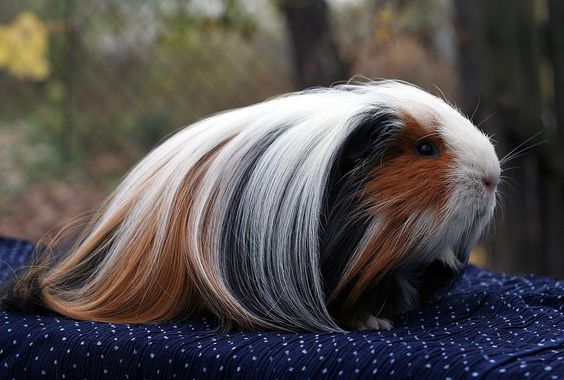
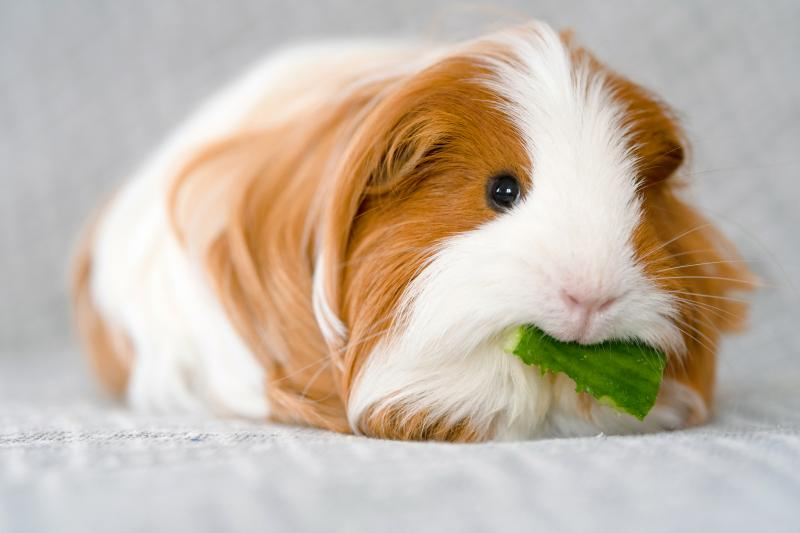
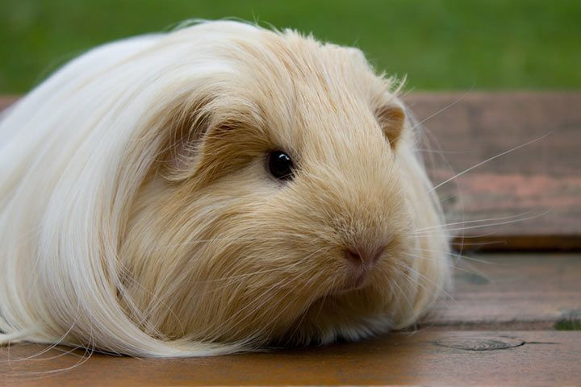
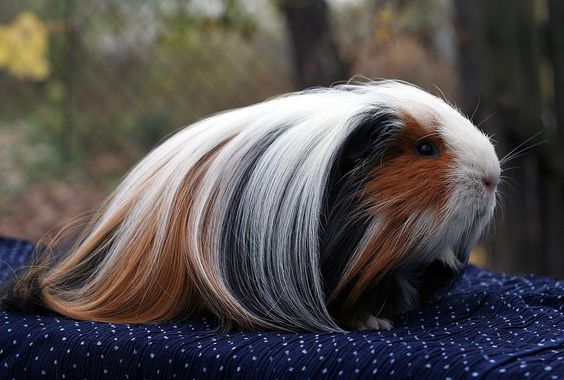
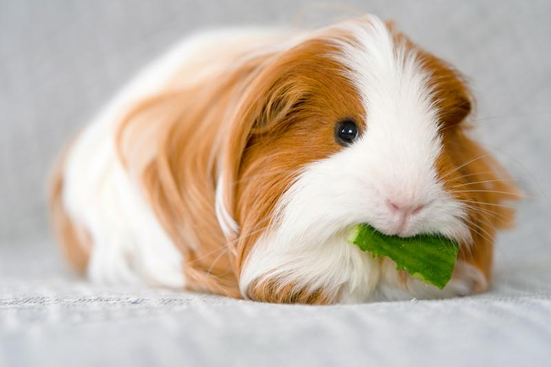
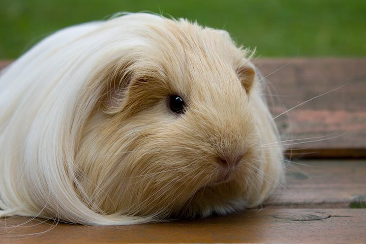
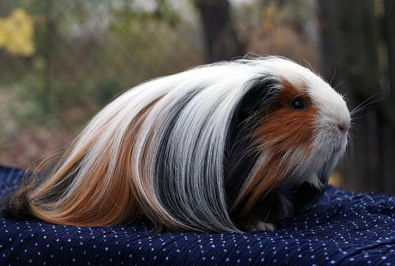
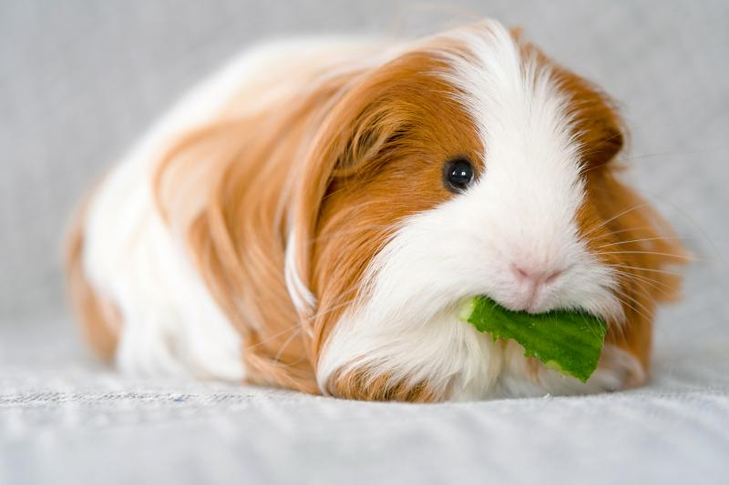
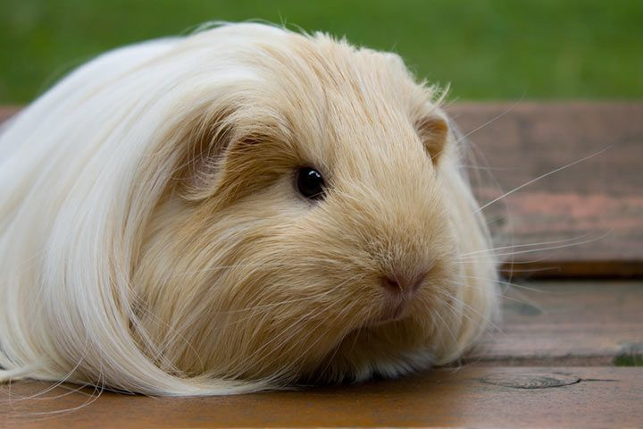

Шелті — її величність королева, варта особливої уваги. Історія появи цієї породи дуже цікава. Шелті – результат штучної селекції і порода бере свій початок в 1938 році, шляхом схрещування різновидів перуанської і американської морської свинки. Але остаточно сформувалась і отримала загальне визнання порода лише в 1978 році. Після численних експериментів були отримані морські свинки з чудовими шовковистим пасмами на спині різного забарвлення. Ця порода безумовно є однією з найпопулярніших на виставках.
Шелті має довгу, шовковисту шерсть, абсолютно пряму, без розеток, що росте від голови і не має проділів, чим відрізняється від інших родичів. На голові шерсть росте своєрідною гривою, яка спадає на плечі та спину тварини. З боків грива може бути коротшою, ніж шерсть, що росте з середини голови. Може мати будь яке забаррвлення.
Особливостями догляду за Шелті є те, що цих гризунів потрібно щодня ретельно вичісувати, щоб шерсть була завжди красивою і доглянутою.


